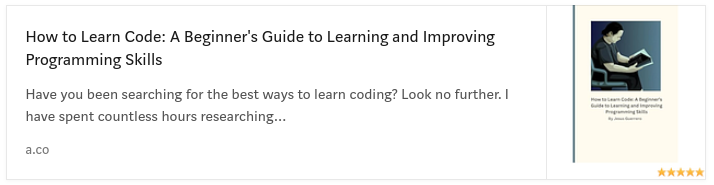
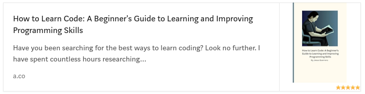

The Complete Software Developers Career Guide is all about the career of the software developer. From beginning to end John Sonmez explains the entire process of becoming a professional developer.
For the career of a software developer, this is the best book on the market. I have scoured many books and come to this conclusion.
For myself I searched for the best book on different aspects of programming.
Currently, my book, How to Learn Code is a top contender for one of the best programming books for hobbyist programmers. At least according to the bias I have as its creator, *wink-wink.
How to Learn Code is 265 pages on learning code, how to learn faster and perform your best as a reader and writer of code. In comparison Software Developers Career Guide has 80 pages on learning code.
Yea its a solid 80 pages. But, my book will just get better from here in terms of learning code. I have another 40 pages or more ready to add, There will be iterations and additions.
Just like other books it will evolve over time. My plan is to rewrite most chapters to be more consistent, add content and keep it narrowly focused on learning code.
So yea check both of these out, John Sonmez and Jesus Guerrero.
 

But, so far as a career in software engineering there is no other competition to John Sonmez's career guide. Sonmez wrote 800 pages on starting and finishing a career in programming.
Not only is it 800 pages, it is a well written 800 pages.
Should you read Software Developers Career guide?
Yes. If you are serious about starting a career in programming then this book is great. Even better-if you just got a job as a programmer you can learn the soft skills from this book.
I have a copy at home ready to read as soon as I get a job. The majority-600 pages-are all about keeping, getting and working a programming job.
My only gripe about Software Developers Career Guide is Section 2 on getting a job. According to John Sonmez in 2017 entry-level work was fairly easy to get into. You learn programming for 2-3 years, master LeetCode then interview.
It was simple as that.
Yea, after 2022 and the engineering market crash there are hoards of programmers vying for jobs. It is so competitive with layoffs and downsizing companies developers are out of work.
All the time I see all kinds of unethical behaviors among developers:
- Falsely placing bachelors
- Buying quick and easy Masters or PhDs
- Fibbing experience
- Using shell companies
- Using false salaries
It is quite sad. These developers actually get the job too. In 2017 when the book was published the competition was no where near as bad. The book reads as if we are in a golden age frozen in time.
I feel it gives readers a false impression which we rudely awaken to in 2024.
Me personally, I read this book in 2018, got excited and decided to dedicate myself to Computer Science. Not just because of this book but because I loved it.
And when I finally entered the job market in 2023 engineering was a different beast than described.
But yes, outside the getting a job section the book is great. I recommend it.
Who is John Sonmez?
John Sonmez is no longer a programmer. In recent videos and podcasts he mentions he hasn't touched code in months never mind working a project.
Nowadays he has switched to real estate and motivational content. All the money he earned as an engineer has shifted over to his non-programming projects.
Over LinkedIn we spoke under direct message. He seems to be altruistic in giving back to the community. He gave me his shill for getting into real estate-that if I knew anybody who wanted to learn from his real estate webinar.
A solid few hundred dollars to learn to invest.
https://simpleprogrammer.com/products/simple-real-estate/

This and the Bull Dog mindset brand-Essentially a men's success group AKA motivational content are what he is working on. Like motivational speaking but in written form and webinars.
You can liken it to Tai Lopez or Tony Robbins but Sonmez genuinely is trying to give back.
Here are his brands and websites:

Both of these have their own books all written and owned by him. Each is well written along with his blogs.
Other books
Books are a necessary tool for providing a complete education on programming. Outside this you can learn slowly with time but most learners end up with gaps of learning.
Some books teach concepts themselves, some provide soft skills and others exist on organized learning.
In programming there is a major difference between books like:
- How to Learn Code, Complete Software Career Guide, Swipe to Unlock, etc
- Clean Code, The Head First Series, Python Crash Course, etc
They follow a different purpose for improving you as a programmer. The upper three don't even show a line of code. Yet they teach you to learn code or speak of code at work.
My book has zero code blocks or markup for code. The same with Sonmez's books and Swipe to Unlock. They exist more on the vein of organized learning.
They show you how to be a better programmer by understanding learning systems, soft skills and technology. Their goal is to improve everything around programming to provide the best coverage of technology as a scope.

With this in mind I recommend reading many books on many subjects of technology-even history books like How the Internet Happened or UNIX: A History and a Memoir.
Most of these books I have at home and have read the majority of these books in completion. Each covered a different aspect of Computer Science I feel I could not do without.
FAQ
Is programming still worth it despite the job market?
If you can't land a job, there is no reason to stop programming. Coding can be treated like a sport you enjoy.
Had I known what I know now I would get into healthcare or a trade. Those have much higher job security. Though I would still be coding as a hobby in those fields.
Coding is the best activity of my day as well as writing. Super fun, super cool and like sports you make friends.
Totally worth it.
Will John Sonmez's content help me with job interviews
Very much so, yes. His entire brand revolves on landing a job. SimpleProgrammer.com has gone through many iterations of job interview online courses.
I did one and it helped quite a bit. The Software Developer's Career Guide used to come with an interview kit.
I went through it several times. I feel it helped me interview much better. Though I was never able to predict what would be in the interview. His book is all about the best ways to interview as well as keep a job. And he has written many articles about the technical interview.
In the past his resources were one of the best out there. However the current meta has shifted.
Nowadays this resource appears to be the best:
https://www.techinterviewhandbook.org/

It comes with a Blind169 and complete guides on the different aspects of interviewing. What makes it so great is its organization of articles, laid out in a detailed plan on helping you get a job.
Why should programmers read books?
Each book covers a specific topic deeply. At least the good books do. When you read a book there should be a specific intent.
Complete Career Guide is all about career in programming. How to Learn Code is a book on learning to learn, How the Internet Happened is a comprehensive accounting of the internet from 1992-2007.
None of these overlap each other in the journey of learning programming. Each provides you with greater context in what you are doing.
What is the point about learning the history of programming?
Learning history first and foremost makes you feel authentic. You know when you are and why you are here. You can better estimate your value as a developer in your place of history.
History can help you appreciate the current times. When you speak on programming you speak with authority and understanding.
Other intellectuals recognize other intellectuals when they speak. It is almost prophetic how the first paragraph spoken from an intellectual shows their place.
There is an elitism that exists across intellectuals. They don't speak to non-intellectual people. Almost like a caste system of intellect and money. Both required to enter the next caste.
Though I have amassed a group of friends that don't care about money, if you are the type to care about these things-intellect is a status symbol.